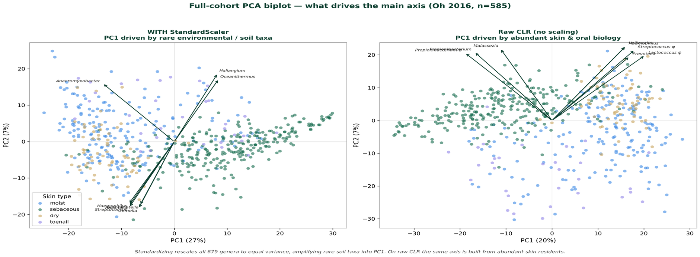
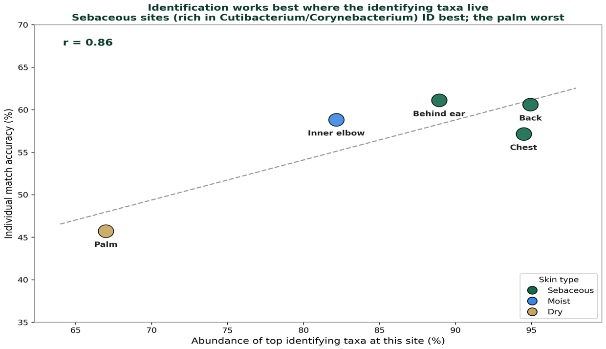
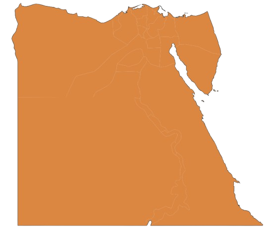
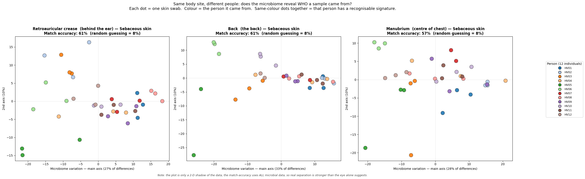
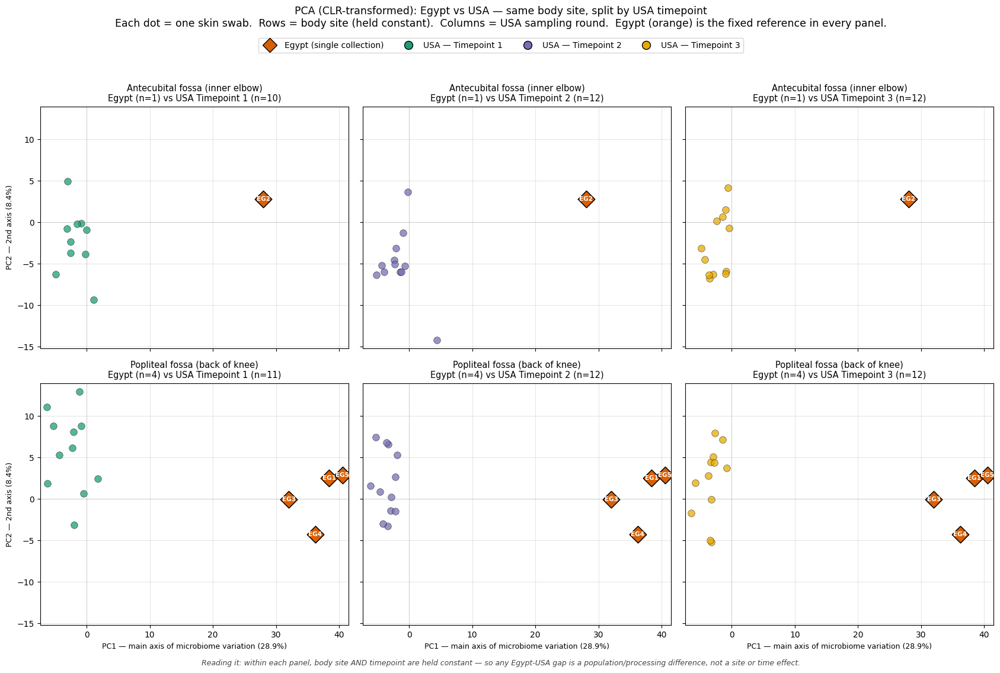
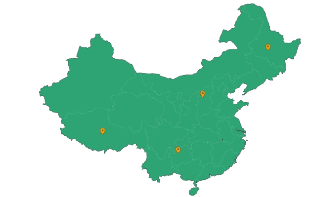
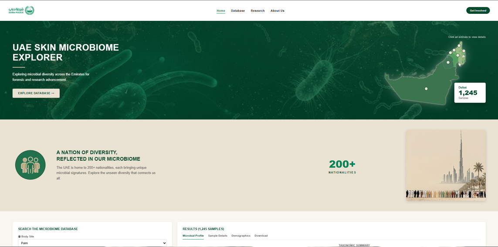

Microbes That
Remember You
Individual identification from the human skin microbiome using machine-learning classifiers.
Every contact leaves a trace.
Mohammed Omar
Maha Jehanzeb Khan
Meera Mustafa Ahmed Naqib Sanqoor
The skin carries a
personal microbial signature
Skin microbes carry informative signatures, transferred onto everything we touch. These signatures vary over time — but machine learning extracts the recurring, discriminatory patterns that reveal who was there, even where human DNA fails.
What happens when
DNA evidence runs out?
A pilot touch-microbiome study on glass recovered four times as many microbial versus usable human-STR profiles.
Our end-to-end machine-learning pipeline
sample_id.Supervised (LR · SVM · RF · GB · k-NN) → classify and identify who a sample came from.
Unsupervised (PCA · PCoA · k-means) → discover structure with no labels; here it is body-site, not person.
Oh et al. 2016 (Cell) shotgun metagenomics — 585 samples · 12 individuals · 17 body sites · 1,176 genera per sample.
Preparing the Egyptian pilot — same format as the USA data
The Egyptian pilot (n = 5, 16S rRNA V3–V4) is reprocessed into the exact same genus-table format as the USA data — so the two populations can be compared directly, on equal footing.
What drives the main axis — real skin biology, not artifact
Standardizing rescales all 679 genera to equal variance, amplifying rare soil taxa into PC1. On raw CLR the same axis is built from abundant skin residents — Cutibacterium, Malassezia, oral genera.
In simple terms: our method correctly picks up real skin bacteria, not background noise.
PCA loadings describe abundance covariation · Oh et al. 2016, n = 585


Which taxa actually identify a person
Each column is one person; each row a skin microbe. Red = more than the group average, blue = less — the number is that person's mean % abundance.
Read down any column and a distinctive pattern appears — that person's microbial signature. No two columns look alike, and that individuality is what makes identification possible.
Genera like Corynebacterium, Cutibacterium and Malassezia carry the strongest personal signal.
Identification works best where the identifying taxa live
The dry, high-contact hypothenar palm constantly picks up new bacteria, washing out the personal signal. Sebaceous sites ID best; the palm — constantly re-inoculated — is worst.

The closest study to ours — and how we compare
Abundance and π are a ladder, not a contradiction — Schmedes' feature selection also landed on Cutibacterium & Corynebacterium. Genus abundance carries enough signal for strong ID; strain π carries more.
Which model identifies best
Top-1 = the model's single best guess was correct; Top-3 = the right person was in its top three. Chance level is far below every bar — every model beats guessing.
LR leads: with high-dimensional, scaled features and modest samples, a linear model generalises better than heavier ensembles here.
Regression
(RBF)
Boosting
Forest
(k=5)
What the two populations share — and where they diverge
Genera shared vs population-unique

Egypt USA
USA
USA — same body site, held constant across time
With site held constant, an individual's swabs still cluster together. Knowing the site a sample came from is extra information that strengthens an identification, on top of the person-level microbial signal.
Match accuracy uses ALL microbial data; the 2-D projection is only a shadow of the real separation.


Egypt vs USA — the gap isn't site or time
Each panel fixes both body site and USA timepoint, yet Egypt (orange) sits far to the right in every one — so that separation reflects a population or processing difference, not a site or time effect.
PC1–PC2 is a 2-D shadow of CLR-transformed data; the full separation spans many more dimensions.
The microbiome already works as a geographic locator
Palmar skin outperformed oral and nasal sites for geolocation.

4 regions sampled across ChinaBarbados, Chile, South Africa and Thailand showed the same signal in oral and stool microbiomes, even after diet and lifestyle.
From a borrowed dataset
to a working forensic tool.
A genus-level classifier, an honest cross-population benchmark, and a live identification platform — the groundwork for a UAE skin-microbiome reference database.
- Ambition to court-ready
- Locally-relevant data
- Leading research in the Gulf
 United Arab Emirates
United Arab Emirates
Forensic Microbiome Identification Platform
The ML classifier, running live — identify an unknown sample against the reference database.

Explore the live database
mahakhx.github.io/
UAE-Skin-Microbiome-Explorer
- Pioneering Gulf research
- Diversity & inclusion
- Advancing global research
Hurdles to clear before court-ready evidence
What we established, and what comes next
Thank You
Skin-microbiome individual identification — toward court-ready, locally-relevant forensic evidence.
Explore the
live platform
Scan to open the UAE Skin Microbiome Explorer and the running ML identification system.
mahakhx.github.io/UAE-Skin-Microbiome-Explorer
Primary sources
Slides 04, 06
Related work
Geolocation & local data
Touch microbiome
China
4 populations
Egypt pilot